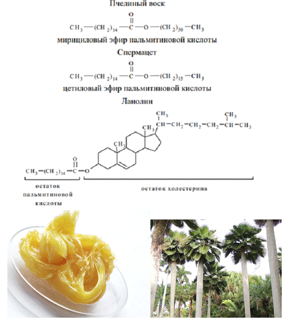

Воски - это сложные эфиры высших жирных кислот и высших одноатомных спиртов. Чаще всего они представляют собой сложные эфиры пальмитиновой кислоты, где в качестве спиртового компонента могут присутствовать остатки цетилового, церилового, мелиссилового и мирицилового и реже - других предельных одноатомных спиртов. По происхождению воски бывают растительные и животные. Наиболее известными восками животного происхождения являются пчелиный воск, спермацет и ланолин. Спермацет выделяют из спермацетового жира, содержащегося в полостях черепной коробки кашалотов. Ланолин (шерстный жир) получают при промывке шерсти овец на шерстомойных фабриках. Из растительных восков наиболее известны карнаубский воск (бразильская пальма) и пальмовый воск (восковая пальма).

"Химия - интересная наука" - Место, где вы можете получить теоритическую и практичесткую информацию о замечательной науке - химии.